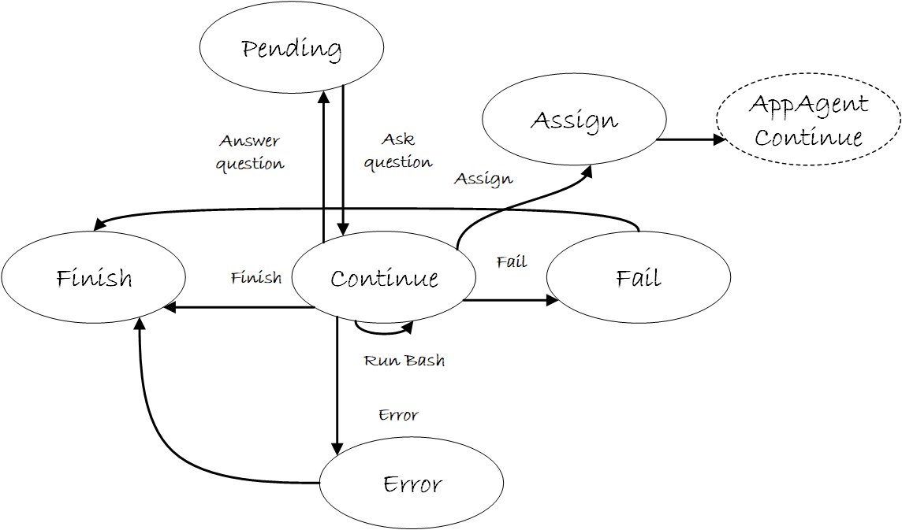

HostAgent State Machine
Overview
HostAgent uses a 7-state finite state machine (FSM) to manage task orchestration flow. The state machine controls task decomposition, application selection, AppAgent delegation, and completion verification. States transition based on LLM decisions and system events.
State Machine Architecture
State Enumeration
class HostAgentStatus(Enum):
"""Store the status of the host agent"""
ERROR = "ERROR" # Unhandled exception or system error
FINISH = "FINISH" # Task completed successfully
CONTINUE = "CONTINUE" # Active processing state
ASSIGN = "ASSIGN" # Delegate to AppAgent
FAIL = "FAIL" # Task failed, cannot proceed
PENDING = "PENDING" # Await external event or user input
CONFIRM = "CONFIRM" # Request user approval
State Management
HostAgent states are managed by HostAgentStateManager, which implements a singleton registry pattern:
class HostAgentStateManager(AgentStateManager):
"""Manages the states of the host agent"""
_state_mapping: Dict[str, Type[HostAgentState]] = {}
@property
def none_state(self) -> AgentState:
return NoneHostAgentState()
All HostAgent states are registered using the @HostAgentStateManager.register decorator, enabling dynamic state lookup by name.
State Definitions
1. CONTINUE State
Purpose: Active orchestration state where HostAgent executes its 4-phase processing pipeline.
@HostAgentStateManager.register
class ContinueHostAgentState(HostAgentState):
"""The class for the continue host agent state"""
async def handle(self, agent: "HostAgent", context: Optional["Context"] = None):
"""Execute the 4-phase processing pipeline"""
await agent.process(context)
def is_round_end(self) -> bool:
return False # Round continues
@classmethod
def name(cls) -> str:
return HostAgentStatus.CONTINUE.value
| Property | Value |
|---|---|
| Type | Active |
| Processor Executed | ✓ Yes (4 phases) |
| Round Ends | No |
| Duration | Single round |
| Next States | CONTINUE, ASSIGN, FINISH, CONFIRM, ERROR |
Behavior:
- Captures desktop screenshot
- LLM analyzes desktop and selects application
- Updates context with selected application
- Records orchestration step in memory
Example Usage:
# HostAgent in CONTINUE state
agent.status = HostAgentStatus.CONTINUE.value
agent.set_state(ContinueHostAgentState())
# State executes 4-phase pipeline
await state.handle(agent, context)
# LLM sets next status in response
# {"Status": "ASSIGN", "ControlText": "Microsoft Word"}
2. ASSIGN State
Purpose: Create or retrieve AppAgent for the selected application and delegate execution.
@HostAgentStateManager.register
class AssignHostAgentState(HostAgentState):
"""The class for the assign host agent state"""
async def handle(self, agent: "HostAgent", context: Optional["Context"] = None):
"""Create/get AppAgent for selected application"""
agent.create_subagent(context)
def next_state(self, agent: "HostAgent") -> "AppAgentState":
"""Transition to AppAgent's CONTINUE state"""
next_agent = self.next_agent(agent)
if type(next_agent) == OpenAIOperatorAgent:
return ContinueOpenAIOperatorState()
else:
return ContinueAppAgentState()
def next_agent(self, agent: "HostAgent") -> "AppAgent":
"""Get the active AppAgent for delegation"""
return agent.get_active_appagent()
@classmethod
def name(cls) -> str:
return HostAgentStatus.ASSIGN.value
| Property | Value |
|---|---|
| Type | Transition |
| Processor Executed | ✗ No |
| Round Ends | No |
| Duration | Immediate |
| Next States | AppAgent.CONTINUE |
| Next Agent | AppAgent (switched) |
Behavior:
- Checks if AppAgent for application already exists (cache)
- Creates new AppAgent if not cached
- Sets parent-child relationship (
app_agent.host = self) - Shares Blackboard (
app_agent.blackboard = self.blackboard) - Transitions to
AppAgent.CONTINUEstate
AppAgent Caching:
# HostAgent maintains a cache of created AppAgents
agent_key = f"{app_root}/{process_name}"
if agent_key in self.appagent_dict:
# Reuse existing AppAgent
self._active_appagent = self.appagent_dict[agent_key]
else:
# Create new AppAgent
app_agent = AgentFactory.create_agent(**config)
self.appagent_dict[agent_key] = app_agent
self._active_appagent = app_agent
3. FINISH State
Purpose: Task completed successfully, terminate session.
@HostAgentStateManager.register
class FinishHostAgentState(HostAgentState):
"""The class for the finish host agent state"""
def is_round_end(self) -> bool:
return True # Round ends
@classmethod
def name(cls) -> str:
return HostAgentStatus.FINISH.value
| Property | Value |
|---|---|
| Type | Terminal |
| Processor Executed | ✗ No |
| Round Ends | Yes |
| Duration | Permanent |
| Next States | None |
Behavior:
- Session terminates successfully
- All subtasks completed
- Results available in Blackboard
4. FAIL State
Purpose: Task failed, cannot proceed further.
@HostAgentStateManager.register
class FailHostAgentState(HostAgentState):
"""The class for the fail host agent state"""
def is_round_end(self) -> bool:
return True # Round ends
def next_state(self, agent: "HostAgent") -> AgentState:
return FinishHostAgentState() # Transition to FINISH for cleanup
@classmethod
def name(cls) -> str:
return HostAgentStatus.FAIL.value
| Property | Value |
|---|---|
| Type | Terminal |
| Processor Executed | ✗ No |
| Round Ends | Yes |
| Duration | Permanent |
| Next States | FINISH (for cleanup) |
Behavior:
- Task cannot be completed
- May result from user rejection or irrecoverable error
- Transitions to FINISH for graceful shutdown
5. ERROR State
Purpose: Unhandled exception or critical system error.
@HostAgentStateManager.register
class ErrorHostAgentState(HostAgentState):
"""The class for the error host agent state"""
def is_round_end(self) -> bool:
return True # Round ends
def next_state(self, agent: "HostAgent") -> AgentState:
return FinishHostAgentState() # Transition to FINISH for cleanup
@classmethod
def name(cls) -> str:
return HostAgentStatus.ERROR.value
| Property | Value |
|---|---|
| Type | Terminal |
| Processor Executed | ✗ No |
| Round Ends | Yes |
| Duration | Permanent |
| Next States | FINISH (for cleanup) |
Behavior:
- Critical system error occurred
- Unhandled exception during processing
- Automatically triggers graceful shutdown
Error vs Fail:
- ERROR: System/code errors (exceptions, crashes)
- FAIL: Logical task failures (user rejection, impossible task)
6. PENDING State
Purpose: Await external event or user input before continuing.
@HostAgentStateManager.register
class PendingHostAgentState(HostAgentState):
"""The class for the pending host agent state"""
async def handle(self, agent: "HostAgent", context: Optional["Context"] = None):
"""Ask the user questions to help the agent proceed"""
agent.process_asker(ask_user=ufo_config.system.ask_question)
def next_state(self, agent: "HostAgent") -> AgentState:
"""Return to CONTINUE after receiving input"""
agent.status = HostAgentStatus.CONTINUE.value
return ContinueHostAgentState()
@classmethod
def name(cls) -> str:
return HostAgentStatus.PENDING.value
| Property | Value |
|---|---|
| Type | Waiting |
| Processor Executed | ✗ No |
| Round Ends | No |
| Duration | Until event/timeout |
| Next States | CONTINUE, FAIL |
Behavior:
- Requests additional information from user
- Waits for external event (async operation)
- Transitions to CONTINUE after receiving input
- May timeout and transition to FAIL
7. CONFIRM State
Purpose: Request user approval before proceeding with action.
@HostAgentStateManager.register
class ConfirmHostAgentState(HostAgentState):
"""The class for the confirm host agent state"""
async def handle(self, agent: "HostAgent", context: Optional["Context"] = None):
"""Request user confirmation"""
# Confirmation logic handled by processor
pass
@classmethod
def name(cls) -> str:
return HostAgentStatus.CONFIRM.value
| Property | Value |
|---|---|
| Type | Waiting |
| Processor Executed | ✓ Yes (collect confirmation) |
| Round Ends | No |
| Duration | Until user responds |
| Next States | CONTINUE (approved), FAIL (rejected) |
Behavior:
- Displays confirmation request to user
- Waits for user approval/rejection
- CONTINUE if approved
- FAIL if rejected
Safety Check:
CONFIRM state provides a safety mechanism for sensitive operations such as application launches, file deletions, and system configuration changes.
State Transition Diagram

State Transition Control
LLM-Driven Transitions
Most state transitions are controlled by the LLM through the Status field in its response:
{
"Observation": "Desktop shows Word and Excel. User wants to extract data from Word.",
"Thought": "I should start with Word to extract the table data first.",
"Current Sub-Task": "Extract table data from Word document",
"ControlLabel": "0",
"ControlText": "Microsoft Word - Document1",
"Status": "ASSIGN",
"Comment": "Delegating data extraction to Word AppAgent"
}
Transition Flow:
- HostAgent in
CONTINUEstate executes processor - LLM analyzes desktop and decides next action
- LLM sets
Status: "ASSIGN"in response - Processor updates
agent.status = "ASSIGN" - State machine transitions:
CONTINUE→ASSIGN ASSIGNstate creates/gets AppAgent- Transitions to
AppAgent.CONTINUE
System-Driven Transitions
Some transitions are automatic and controlled by the system:
| From State | To State | Trigger | Controller |
|---|---|---|---|
| ASSIGN | AppAgent.CONTINUE | AppAgent created | System |
| AppAgent.CONTINUE | CONTINUE | AppAgent returns | System |
| PENDING | FAIL | Timeout | System |
| CONFIRM | CONTINUE | User approved | User Input |
| CONFIRM | FAIL | User rejected | User Input |
| ERROR | FINISH | Exception caught | System |
| FAIL | FINISH | Cleanup needed | System |
Complete Execution Flow Example
Multi-Application Task
User Request: "Extract sales table from Word and create bar chart in Excel"
Step-by-Step State Transitions
| Step | Agent | State | Action | Next State |
|---|---|---|---|---|
| 1 | HostAgent | CONTINUE | Analyze desktop, select Word | ASSIGN |
| 2 | HostAgent | ASSIGN | Create WordAppAgent | AppAgent.CONTINUE |
| 3 | WordAppAgent | CONTINUE | Extract table | FINISH |
| 4 | HostAgent | CONTINUE | Analyze result, select Excel | ASSIGN |
| 5 | HostAgent | ASSIGN | Create ExcelAppAgent | AppAgent.CONTINUE |
| 6 | ExcelAppAgent | CONTINUE | Create chart | FINISH |
| 7 | HostAgent | CONTINUE | Verify completion | FINISH |
| 8 | HostAgent | FINISH | Session ends | - |
Implementation Details
State Class Hierarchy
# Base state interface
class HostAgentState(AgentState):
"""Abstract class for host agent states"""
async def handle(self, agent: "HostAgent", context: Optional["Context"] = None):
"""Execute state-specific logic"""
pass
def next_state(self, agent: "HostAgent") -> AgentState:
"""Determine next state based on agent status"""
status = agent.status
return HostAgentStateManager().get_state(status)
def next_agent(self, agent: "HostAgent") -> "HostAgent":
"""Get agent for next step (usually same agent)"""
return agent
def is_round_end(self) -> bool:
"""Check if round should end"""
return False
@classmethod
def agent_class(cls) -> Type["HostAgent"]:
from ufo.agents.agent.host_agent import HostAgent
return HostAgent
State Registration Pattern
# Registration decorator adds state to manager
@HostAgentStateManager.register
class ContinueHostAgentState(HostAgentState):
@classmethod
def name(cls) -> str:
return HostAgentStatus.CONTINUE.value
# Manager can look up states by name
state = HostAgentStateManager().get_state("CONTINUE")
# Returns: ContinueHostAgentState instance
Lazy Loading:
States are loaded lazily by HostAgentStateManager only when needed, reducing initialization overhead.
### State Transition in Round Execution
```python
# In Round.run() method
while not state.is_round_end():
# Execute current state
await state.handle(agent, context)
# Get next state based on agent.status
state = state.next_state(agent)
# Check if agent switched (HostAgent → AppAgent)
agent = state.next_agent(agent)
Lazy Loading
States are loaded lazily by HostAgentStateManager only when needed, reducing initialization overhead.
State Transition Table
Complete Transition Matrix
| From \ To | CONTINUE | ASSIGN | FINISH | FAIL | ERROR | PENDING | CONFIRM | AppAgent.CONTINUE |
|---|---|---|---|---|---|---|---|---|
| CONTINUE | ✓ LLM | ✓ LLM | ✓ LLM | ✗ | ✓ System | ✓ LLM | ✓ LLM | ✗ |
| ASSIGN | ✗ | ✗ | ✗ | ✗ | ✗ | ✗ | ✗ | ✓ System |
| FINISH | ✗ | ✗ | ✗ | ✗ | ✗ | ✗ | ✗ | ✗ |
| FAIL | ✗ | ✗ | ✓ System | ✗ | ✗ | ✗ | ✗ | ✗ |
| ERROR | ✗ | ✗ | ✓ System | ✗ | ✗ | ✗ | ✗ | ✗ |
| PENDING | ✓ User | ✗ | ✗ | ✓ Timeout | ✗ | ✗ | ✗ | ✗ |
| CONFIRM | ✓ User | ✗ | ✗ | ✓ User | ✗ | ✗ | ✗ | ✗ |
| AppAgent.CONTINUE | ✓ System | ✗ | ✗ | ✗ | ✗ | ✗ | ✗ | ✗ |
Legend: - ✓ LLM: Transition controlled by LLM decision - ✓ System: Automatic system transition - ✓ User: User input required - ✓ Timeout: Timeout triggers transition - ✗: Transition not allowed
Related Documentation
Architecture & Design:
- Overview: HostAgent high-level architecture
- Processing Strategy: 4-phase processing pipeline
- State Design Pattern: General state framework
- AppAgent State Machine: AppAgent FSM comparison
System Integration:
- Round Management: How states execute in rounds
- Session Management: Session lifecycle
Summary
Key Takeaways:
- 7 States: CONTINUE, ASSIGN, FINISH, FAIL, ERROR, PENDING, CONFIRM
- LLM Control: Most transitions driven by LLM's
Statusfield - Agent Handoff: ASSIGN state transitions to AppAgent.CONTINUE
- Terminal States: FINISH, FAIL, ERROR end the session
- Safety Checks: CONFIRM and PENDING provide user control
- State Pattern: Implements Gang of Four State design pattern
- Singleton Registry: HostAgentStateManager manages all states
Next Steps:
- Read Processing Strategy to understand what happens in CONTINUE state
- Read Command System for available desktop operations
- Read AppAgent State Machine for comparison